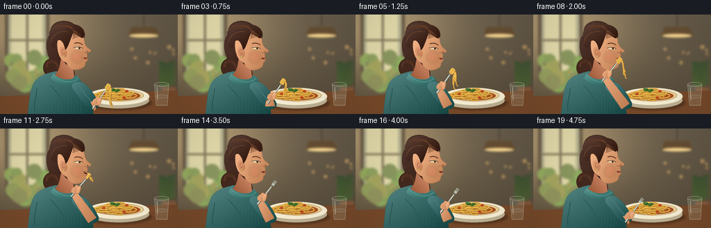
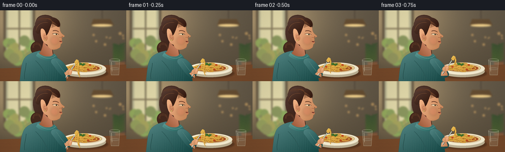

CODING AGENTS AS PIXEL WORLD MODELS
traex/GPT-6.1-Sol · motion_rationality_0005
点击播放 · 原生 RGB 像素
逐轮保存的候选
回放视频、检查图与代码变化。
每份候选均可单独播放。实际图片检查记录在下方工具轨迹中。
候选 01播放与检查图
点击播放 · 原生 RGB 像素


展开代码变化
--- 上一保存版本
+++ 本次保存版本
@@ -0,0 +1,282 @@
+from pathlib import Path
+import math
+import numpy as np
+from PIL import Image, ImageDraw, ImageFilter
+import artifact_io
+
+ROOT=Path(__file__).resolve().parent
+W,H,S=256,144,4
+rng=np.random.default_rng(61)
+
+def bezier(p0,p1,p2,p3,n=25):
+ t=np.linspace(0,1,n)[:,None]
+ return ((1-t)**3*np.array(p0)+3*(1-t)**2*t*np.array(p1)+3*(1-t)*t*t*np.array(p2)+t**3*np.array(p3)).tolist()
+def path(start,segs):
+ pts=[start]; p=start
+ for seg in segs:
+ if len(seg)==2: pts.append(seg);p=seg
+ else:
+ p1,p2,p3=seg;pts+=bezier(p,p1,p2,p3)[1:];p=p3
+ return pts
+
+def xy(pts):return [(int(x*S),int(y*S)) for x,y in pts]
+def line(im,pts,color,width=1):
+ ImageDraw.Draw(im).line(xy(pts),fill=color,width=max(1,int(width*S)),joint='curve')
+def ellipse(im,box,fill,outline=None,width=.5):
+ ImageDraw.Draw(im).ellipse(tuple(int(v*S) for v in box),fill=fill,outline=outline,width=max(1,int(width*S)))
+def poly(im,pts,fill):ImageDraw.Draw(im).polygon(xy(pts),fill=fill)
+def shade(im,pts,base,light=(1.,-.5),amp=15,outline=None):
+ mask=Image.new('L',im.size);ImageDraw.Draw(mask).polygon(xy(pts),fill=255)
+ ys,xs=np.mgrid[:H*S,:W*S];
+ p=np.array(pts);x0,y0=p.min(0); x1,y1=p.max(0)
+ z=(xs/S-(x0+x1)/2)/(max(x1-x0,1))*light[0]+(ys/S-(y0+y1)/2)/(max(y1-y0,1))*light[1]
+ a=np.clip(np.array(base)[None,None,:]+z[:,:,None]*amp,0,255).astype(np.uint8)
+ im.paste(Image.fromarray(a), (0,0),mask)
+ if outline:line(im,pts+[pts[0]],outline,.45)
+def curve(im,p0,p1,p2,p3,col,width=1):line(im,bezier(p0,p1,p2,p3,40),col,width)
+def smooth(a): a=np.clip(a,0,1); return a*a*(3-2*a)
+
+# Architectural setting in a warm cafe, out of focus behind the subject.
+y,x=np.mgrid[:H*S,:W*S]; xx=x/S;yy=y/S
+light=np.exp(-((xx-34)**2/11000+(yy-15)**2/6500))
+bg=np.zeros((H*S,W*S,3),np.uint8)
+for k,(a,b) in enumerate([(102,79),(91,66),(74,43)]):bg[:,:,k]=np.clip(a+b*light-yy*.11,0,255)
+bg=Image.fromarray(bg)
+d=ImageDraw.Draw(bg)
+d.rectangle((7*S,-6*S,71*S,100*S), fill=(108,94,72))
+d.rectangle((12*S,0,66*S,97*S),fill=(185,181,146))
+d.rectangle((16*S,0,61*S,94*S),fill=(227,218,171))
+line(bg,[(39,0),(39,94)],(126,116,88),3)
+line(bg,[(13,37),(65,37)],(137,124,94),3)
+# blurred distant garden and decorative light
+for k in range(27):
+ px=rng.uniform(15,64);py=rng.uniform(62,100);r=rng.uniform(3,13)
+ ellipse(bg,(px-r,py-r,px+r,py+r),(int(rng.integers(134,173)),int(rng.integers(143,174)),95))
+line(bg,[(207,-2),(207,17)],(65,56,45),1)
+poly(bg,[(189,18),(224,18),(231,31),(184,31)],(102,78,50))
+ellipse(bg,(186,28,228,33),(253,219,146))
+for i in range(10):
+ px=rng.uniform(176,252);py=rng.uniform(38,90);r=rng.uniform(1,3)
+ ellipse(bg,(px-r,py-r,px+r,py+r),(178,143,93))
+# Plant on right
+line(bg,[(239,109),(244,67)],(65,79,47),2)
+for j in range(7):
+ q=71+j*5
+ poly(bg,path((242,q),[[(224,q-9),(223,q+2),(242,q+4)],[(255,q-2),(261,q-9),(244,q-2)]]),(63+j*2,83+j*2,50))
+poly(bg,[(233,105),(254,105),(250,126),(237,126)],(133,88,58))
+bg=bg.filter(ImageFilter.GaussianBlur(1.6*S))
+# table
+poly(bg,[(0,118),(256,110),(256,144),(0,144)],(118,73,42))
+for j in range(14):
+ py=116+j*2.5
+ curve(bg,(0,py+3),(75,py+2),(180,py-1),(256,py-3),(137+j%3*5,86+j%3*4,48),.35)
+
+# Consistent pasta strand geometry.
+pasta=[]
+for j in range(64):
+ cx=rng.normal(166,10);cy=rng.normal(116,2.7)
+ rx=rng.uniform(3,12);ry=rng.uniform(1.2,3.5);ph=rng.uniform(0,6.28)
+ aa=np.linspace(ph,ph+rng.uniform(3.5,6.8),35)
+ pasta.append([(cx+rx*np.cos(a),cy+ry*np.sin(a)) for a in aa])
+
+# Profile head and hair shape (drawn with cubic curves).
+head=path((87,24),[
+ [(103,18),(120,25),(121,36)],
+ [(122,43),(123,46),(129,50)],
+ [(132,52),(132,54),(126,55)],
+ [(124,56),(127,59),(125,62)],
+ [(127,64),(127,67),(123,69)],
+ [(124,76),(116,80),(108,80)],
+ [(102,80),(97,75),(96,70)],
+ [(84,66),(81,49),(83,37)],
+ [(83,31),(84,27),(87,24)]])
+hairback=path((74,27),[
+ [(68,11),(94,3),(108,15)],
+ [(124,19),(125,32),(118,39)],
+ [(113,50),(107,65),(106,80)],
+ [(113,99),(97,110),(79,100)],
+ [(66,96),(75,77),(72,66)],
+ [(63,45),(67,33),(74,27)]])
+shirt=path((80,82),[
+ [(68,85),(55,88),(48,100)],
+ [(42,113),(42,132),(39,149)],(135,149),
+ [(133,127),(127,105),(116,96)],
+ [(109,88),(104,88),(99,83)],(80,82)])
+
+# Animation: gather, raise, bite, draw noodles in, lower fork.
+def pose(t):
+ keys=[(0,158,101),(.5,157,97),(1.45,140,76),(1.95,127,63),(2.55,128,64),(3.25,139,72),(4,148,87),(4.75,158,101)]
+ for (ta,xa,ya),(tb,xb,yb) in zip(keys,keys[1:]):
+ if ta<=t<=tb:
+ s=smooth((t-ta)/(tb-ta));return np.array([xa+(xb-xa)*s,ya+(yb-ya)*s])
+ return np.array(keys[-1][1:])
+
+frames=[]
+for frame in range(20):
+ t=frame/4
+ im=bg.copy()
+ # lower body and back hair
+ shade(im,hairback,(63,37,28),(-1,-1),22,(65,39,29))
+ # tied low bun
+ ellipse(im,(62,63,89,91),(67,40,29))
+ for r in range(7):
+ curve(im,(66+r*.6,76),(65,61+r),(87,60+r),(84-r*.2,85),(88,53,36),.5)
+ shade(im,shirt,(53,104,102),(-1,-1),34,(48,81,77))
+ # fine knit lines and relaxed folds
+ for k in range(16):
+ px=48+k*4.6
+ curve(im,(px,103),(px-1,117),(px+1,129),(px-2,147),(62,112,107),.35)
+ curve(im,(53,107),(52,122),(48,128),(50,140),(39,82,80),1.2)
+ curve(im,(72,102),(85,115),(91,126),(98,142),(43,88,86),1)
+ # neck
+ neck=path((88,64),[[(93,69),(97,76),(105,76)],(107,90),[(104,97),(83,95),(79,87)],[(84,83),(86,76),(88,64)]])
+ shade(im,neck,(185,116,83),(1,-1),30,(136,80,57))
+ shade(im,path((77,85),[[(83,93),(102,99),(110,88)],(116,94),[(99,110),(77,97),(73,92)],(77,85)]),(66,128,123),(-1,-1),27)
+ curve(im,(77,88),(86,97),(103,102),(113,92),(100,152,143),1)
+ # A face inclined slightly toward the fork.
+ dy=.6*math.sin(t*1.1)
+ dx=.4*smooth((t-.5)/1.3)-.4*smooth((t-3.2)/1)
+ hf=lambda pts:[(a+dx,b+dy) for a,b in pts]
+ shade(im,hf(head),(220,156,111),(-1,-.7),39,(166,105,73))
+ # softly painted cheek
+ wash=Image.new('RGBA',im.size,(0,0,0,0));wd=ImageDraw.Draw(wash)
+ wd.ellipse((102*S,53*S,119*S,70*S),fill=(207,92,72,45))
+ wash=wash.filter(ImageFilter.GaussianBlur(2*S));im=Image.alpha_composite(im.convert('RGBA'),wash).convert('RGB')
+ # shadows in the cheek and under jaw
+ curve(im,(108+dx,77+dy),(117+dx,80+dy),(123+dx,75+dy),(122+dx,73+dy),(190,125,88),.6)
+ curve(im,(120+dx,55+dy),(125+dx,54+dy),(126+dx,56+dy),(125+dx,57+dy),(161,95,66),.8)
+ ellipse(im,(125+dx,53+dy,127+dx,54.2+dy),(112,70,50))
+ # ear
+ shade(im,hf(path((93,48),[[(86,43),(84,52),(88,59)],[(93,67),(99,58),(96,53)],[(94,49),(94,48),(93,48)]])),(212,143,102),(-1,-1),18)
+ curve(im,(92+dx,51+dy),(86+dx,49+dy),(90+dx,61+dy),(94+dx,55+dy),(166,95,68),.7)
+ ellipse(im,(90+dx,59+dy,93+dx,62+dy),(214,181,102),(130,94,50),.4)
+ # hair crown and swept fringe
+ fringe=path((72,36),[[(66,16),(88,5),(106,14)],[(119,16),(125,25),(119,34)],[(116,34),(107,26),(105,27)],[(99,43),(97,49),(94,51)],[(92,38),(83,29),(79,47)],[(74,49),(72,43),(72,36)]])
+ shade(im,hf(fringe),(66,39,29),(-1,-1),29,(56,34,26))
+ for k in range(10):
+ curve(im,(75+k*2,21),(79+k*2,10),(105+k*.5,17),(117-k*1.4,31+k*.5),(97+k%3*6,59+k%2*5,39),.55)
+ curve(im,(73,41),(75,28),(87,23),(97,25),(120,76,48),.9)
+ # eyebrow, closed/open eyes looking down at the pasta
+ curve(im,(107+dx,42+dy),(111+dx,40+dy),(116+dx,41+dy),(119+dx,44+dy),(91,49,32),1.3)
+ blink=math.exp(-((t-3.8)/.13)**2)
+ eyeheight=2.0*(1-blink)
+ eye=path((106+dx,48+dy),[[(110+dx,47+dy-eyeheight),(116+dx,47+dy),(119+dx,49+dy)],[(113+dx,50+dy),(110+dx,50+dy),(106+dx,48+dy)]])
+ poly(im,eye,(242,221,182))
+ ellipse(im,(113+dx,47+dy,115.6+dx,50+dy),(71,72,48))
+ ellipse(im,(114+dx,48+dy,115+dx,49.7+dy),(41,36,26))
+ curve(im,(106+dx,48+dy),(111+dx,46.4+dy),(116+dx,47+dy),(119+dx,49+dy),(83,50,34),.85)
+ # Mouth opens only for the bite; gentle chewing after swallowing.
+ opening=smooth((t-1.3)/.55)*(1-smooth((t-2.6)/.7))
+ chew=(.35+.35*math.sin((t-3.2)*10))*smooth((t-3.2)/.2)*(1-smooth((t-4.5)/.25))
+ op=opening*3.3+chew*.9
+ mouth=path((120+dx,63+dy),[[(122+dx,62+dy),(125+dx,62.5+dy),(126+dx,63.3+dy)],[(126+dx,64+op+dy),(122+dx,64.5+op+dy),(120+dx,63+dy)]])
+ poly(im,mouth,(88,39,29))
+ if op>1:
+ curve(im,(122,63.3+dy),(123,63),(125,63.5),(125.8,63.8+dy),(241,220,186),.6)
+ curve(im,(120+dx,62.8+dy),(123+dx,61.5+dy),(124+dx,62.8+dy),(126+dx,63.3+dy),(169,87,65),.75)
+ curve(im,(121+dx,64.3+op+dy),(123+dx,66+op+dy),(125+dx,65+op+dy),(126+dx,63.8+op+dy),(192,104,80),.75)
+ # plate shadow and ceramic bowl
+ sh=Image.new('RGBA',im.size); sd=ImageDraw.Draw(sh)
+ sd.ellipse((123*S,118*S,219*S,138*S),fill=(39,21,10,100))
+ sh=sh.filter(ImageFilter.GaussianBlur(1.5*S));im=Image.alpha_composite(im.convert('RGBA'),sh).convert('RGB')
+ ellipse(im,(126,112,215,136),(192,180,151),(140,117,84),.5)
+ ellipse(im,(126,106,215,131),(248,239,211),(239,224,190),.75)
+ ellipse(im,(135,108.5,207,125.5),(192,156,106))
+ ellipse(im,(137,109.5,206,124.5),(238,215,154))
+ ellipse(im,(139,111,202,124),(172,83,38))
+ for j,pts in enumerate(pasta):
+ line(im,pts,(177,117,42),2.1)
+ line(im,[(a,b-.3) for a,b in pts],(236+j%3*4,180+j%4*6,68+j%4*4),1.45)
+ if j%3==0:line(im,[(a,b-.5) for a,b in pts],(255,219,114),.45)
+ for px,py in [(149,115),(178,120),(182,111)]:
+ ellipse(im,(px-2,py-1.4,px+3,py+1.6),(184,67,30))
+ curve(im,(px-1,py-1),(px,py-2),(px+2,py-1.8),(px+2.5,py-.5),(233,109,44),.8)
+ for pts in [[(160,111),(158,106),(165,107),(168,111)],[(165,111),(169,107),(174,109),(168,113)]]:
+ shade(im,pts,(63,109,43),(-1,-1),23)
+ line(im,[pts[0],pts[-1]],(132,152,62),.45)
+ curve(im,(128,119),(132,132),(196,134),(211,120),(255,252,229),1.1)
+ # A glass of water in the foreground, away from the main action.
+ glass=Image.new('RGBA',im.size); gd=ImageDraw.Draw(glass)
+ gd.polygon(xy([(222,101),(243,101),(241,132),(225,132)]), fill=(201,223,206,38))
+ gd.ellipse((222*S,98*S,243*S,104*S),outline=(239,235,206,170),width=2)
+ gd.line(xy([(222,101),(225,131),(241,131),(243,101)]),fill=(228,224,197,160),width=2)
+ gd.ellipse((224*S,116*S,242*S,121*S),fill=(185,211,198,55),outline=(221,228,207,125),width=2)
+ gd.line(xy([(226,105),(227,124)]),fill=(255,248,215,170),width=3)
+ im=Image.alpha_composite(im.convert('RGBA'),glass).convert('RGB')
+ # Fork grip moves rigidly with the utensil, a bent forearm follows it.
+ tip=pose(t)
+ theta=-.96+.09*smooth((t-1.3)/.7)-.07*smooth((t-3)/1)
+ u=np.array([math.cos(theta),math.sin(theta)]) # vector from handle to tines
+ normal=np.array([-u[1],u[0]])
+ grip=tip-u*29
+ hand=grip-u*2
+ elbow=np.array([133.,133.])
+ wrist=hand-u*6
+ # right upper sleeve
+ sleeve=path((111,97),[[(123,96),(133,110),(141,126)],[(145,133),(139,138),(130,137)],[(119,130),(112,117),(104,107)],[(102,102),(104,98),(111,97)]])
+ shade(im,sleeve,(50,102,100),(-1,-1),31,(40,79,76))
+ curve(im,(114,103),(122,114),(128,124),(137,130),(79,129,123),.8)
+ # forearm tapered from elbow to wrist
+ vec=wrist-elbow; nn=np.array([-vec[1],vec[0]])/np.linalg.norm(vec)
+ arm=path(tuple(elbow+nn*7),[[tuple(elbow+vec*.36+nn*7),tuple(wrist+nn*5),tuple(wrist+nn*4)],tuple(wrist-nn*4),[tuple(wrist-nn*6),tuple(elbow+vec*.28-nn*7),tuple(elbow-nn*7)],[tuple(elbow-nn*10),tuple(elbow+nn*9),tuple(elbow+nn*7)]])
+ shade(im,arm,(214,147,103),(-1,-.4),31,(163,100,68))
+ # serving of spaghetti attached to the fork; strands dangle under gravity.
+ load=1-smooth((t-2.15)/1.1)
+ if load>.015:
+ for j in range(5):
+ start=tip+normal*(j-2)*.6-u*2
+ length=(18+(j%3)*5)*load
+ if t<.7:length+=5*(1-smooth(t/.7))
+ if t<2.0:
+ end=start+np.array([4+math.sin(t*3+j)*2,length])
+ c1=start+np.array([7,6]);c2=end+np.array([-7,-4])
+ else:
+ start=np.array([125.5+dx,64.4+dy])+np.array([j*.3,0])
+ end=start+np.array([6+math.sin(j)*2,length])
+ c1=start+np.array([5,7]);c2=end+np.array([-4,-2])
+ pts=bezier(start,c1,c2,end,40)
+ line(im,pts,(163,106,31),1.55)
+ line(im,[(a-.2,b) for a,b in pts],(246,194,83),1.0)
+ # Silver fork handle, neck and four unmistakable tines.
+ end=tip-u*43
+ base=tip-u*8
+ line(im,[tuple(end+.5*normal),tuple(tip-u*11)],(67,76,73),2.65)
+ line(im,[tuple(end),tuple(tip-u*11)],(205,214,206),1.65)
+ line(im,[tuple(end-.5*normal),tuple(tip-u*9-.35*normal)],(249,245,212),.5)
+ forkhead=[base-normal*2,base+normal*2,tip-u*5+normal*2,tip-u*5-normal*2]
+ poly(im,forkhead,(181,192,184))
+ for j in range(4):
+ off=(j-1.5)*1.15
+ line(im,[tuple(base+normal*off),tuple(tip+normal*off)],(226,229,210),.65)
+ line(im,[tuple(base+normal*off+.25*normal),tuple(tip+normal*off+.25*normal)],(92,111,103),.2)
+ # winding pasta sitting on the tines
+ if load>.12:
+ for j in range(5):
+ cen=tip-u*(2+j*1.3)
+ pts=[]
+ for a in np.linspace(-.9,math.pi*1.75,35):
+ p=cen+normal*math.cos(a)*2.8*load+u*math.sin(a)*1.3
+ pts.append(tuple(p))
+ line(im,pts,(181,124,43),1.7)
+ line(im,[(a-.15,b-.2) for a,b in pts],(249,202,88),1.05)
+ # Curled fingers wrap around the handle (fork remains between fingers and thumb).
+ local=lambda a,b:tuple(hand+u*a+normal*b)
+ palm=path(local(-7,-3),[[local(-6,-7),local(0,-8),local(4,-4)],[local(8,-1),local(7,4),local(2,5)],[local(-3,6),local(-6,3),local(-7,-3)]])
+ shade(im,palm,(223,159,113),(-1,-1),24,(169,105,70))
+ for j in range(3):
+ a=-3+j*2.7
+ finger=path(local(a,-4),[[local(a+1,-7),local(a+4,-5),local(a+4,-2)],[local(a+4,0),local(a+1,1),local(a,-1)],local(a,-4)])
+ shade(im,finger,(226+j*3,161+j*2,115+j*2),(-1,-1),12,(174,112,76))
+ curve(im,local(a+1,-4.2),local(a+2,-4.8),local(a+3,-4.5),local(a+3,-2.7),(239,181,135),.4)
+ thumb=path(local(-3,3),[[local(-1,-1),local(4,-3),local(7,-1)],[local(9,1),local(7,3),local(5,3)],[local(0,6),local(-3,7),local(-3,3)]])
+ shade(im,thumb,(232,167,119),(-1,-1),18,(180,111,73))
+ ellipse(im,(hand[0]+1,hand[1]-4,hand[0]+4,hand[1]-2),(238,183,145))
+ # Subtle global grain and a warm photographic vignette over the illustration.
+ out=np.array(im.resize((W,H),Image.Resampling.LANCZOS)).astype(float)
+ y0,x0=np.mgrid[:H,:W]
+ vign=1-.10*((x0-126)**2/(155**2)+(y0-67)**2/(125**2))
+ noise=np.random.default_rng(271).normal(0,.5,(H,W,1))
+ out=np.clip(out*vign[:,:,None]+noise,0,255).astype(np.uint8)
+ frames.append(out)
+artifact_io.save(np.stack(frames),ROOT)
+print('Saved 20 RGB frames and video player.')
可观测工具轨迹
实际执行的命令与返回图片。
命令 1exit 0
/bin/bash -lc 'ls -la && cat prompt.txt && cat GENERATION_RULES.md && cat task_spec.json'
命令 2exit 0
/bin/bash -lc "cat artifact_io.py && python - <<'PY'
import PIL,numpy
print('PIL/numpy available')
PY"命令 3exit 0
/bin/bash -lc "cat > generate.py <<'PY'
from pathlib import Path
import math
import numpy as np
from PIL import Image, ImageDraw, ImageFilter
import artifact_io
ROOT=Path(__file__).resolve().parent
W,H,S=256,144,4
rng=np.random.default_rng(61)
def bezier(p0,p1,p2,p3,n=25):
t=np.linspace(0,1,n)[:,None]
return ((1-t)**3*np.array(p0)+3*(1-t)**2*t*np.array(p1)+3*(1-t)*t*t*np.array(p2)+t**3*np.array(p3)).tolist()
def path(start,segs):
pts=[start]; p=start
for seg in segs:
if len(seg)==2: pts.append(seg);p=seg
else:
p1,p2,p3=seg;pts+=bezier(p,p1,p2,p3)[1:];p=p3
return pts
def xy(pts):return [(int(x*S),int(y*S)) for x,y in pts]
def line(im,pts,color,width=1):
ImageDraw.Draw(im).line(xy(pts),fill=color,width=max(1,int(width*S)),joint='curve')
def ellipse(im,box,fill,outline=None,width=.5):
ImageDraw.Draw(im).ellipse(tuple(int(v*S) for v in box),fill=fill,outline=outline,width=max(1,int(width*S)))
def poly(im,pts,fill):ImageDraw.Draw(im).polygon(xy(pts),fill=fill)
def shade(im,pts,base,light=(1.,-.5),amp=15,outline=None):
mask=Image.new('L',im.size);ImageDraw.Draw(mask).polygon(xy(pts),fill=255)
ys,xs=np.mgrid[:H*S,:W*S];
p=np.array(pts);x0,y0=p.min(0); x1,y1=p.max(0)
z=(xs/S-(x0+x1)/2)/(max(x1-x0,1))*light[0]+(ys/S-(y0+y1)/2)/(max(y1-y0,1))*light[1]
a=np.clip(np.array(base)[None,None,:]+z[:,:,None]*amp,0,255).astype(np.uint8)
im.paste(Image.fromarray(a), (0,0),mask)
if outline:line(im,pts+[pts[0]],outline,.45)
def curve(im,p0,p1,p2,p3,col,width=1):line(im,bezier(p0,p1,p2,p3,40),col,width)
def smooth(a): a=np.clip(a,0,1); return a*a*(3-2*a)
# Architectural setting in a warm cafe, out of focus behind the subject.
y,x=np.mgrid[:H*S,:W*S]; xx=x/S;yy=y/S
light=np.exp(-((xx-34)**2/11000+(yy-15)**2/6500))
bg=np.zeros((H*S,W*S,3),np.uint8)
for k,(a,b) in enumerate([(102,79),(91,66),(74,43)]):bg[:,:,k]=np.clip(a+b*light-yy*.11,0,255)
bg=Image.fromarray(bg)
d=ImageDraw.Draw(bg)
d.rectangle((7*S,-6*S,71*S,100*S), fill=(108,94,72))
d.rectangle((12*S,0,66*S,97*S),fill=(185,181,146))
d.rectangle((16*S,0,61*S,94*S),fill=(227,218,171))
line(bg,[(39,0),(39,94)],(126,116,88),3)
line(bg,[(13,37),(65,37)],(137,124,94),3)
# blurred distant garden and decorative light
for k in range(27):
px=rng.uniform(15,64);py=rng.uniform(62,100);r=rng.uniform(3,13)
ellipse(bg,(px-r,py-r,px+r,py+r),(int(rng.integers(134,173)),int(rng.integers(143,174)),95))
line(bg,[(207,-2),(207,17)],(65,56,45),1)
poly(bg,[(189,18),(224,18),(231,31),(184,31)],(102,78,50))
ellipse(bg,(186,28,228,33),(253,219,146))
for i in range(10):
px=rng.uniform(176,252);py=rng.uniform(38,90);r=rng.uniform(1,3)
ellipse(bg,(px-r,py-r,px+r,py+r),(178,143,93))
# Plant on right
line(bg,[(239,109),(244,67)],(65,79,47),2)
for j in range(7):
q=71+j*5
poly(bg,path((242,q),[[(224,q-9),(223,q+2),(242,q+4)],[(255,q-2),(261,q-9),(244,q-2)]]),(63+j*2,83+j*2,50))
poly(bg,[(233,105),(254,105),(250,126),(237,126)],(133,88,58))
bg=bg.filter(ImageFilter.GaussianBlur(1.6*S))
# table
poly(bg,[(0,118),(256,110),(256,144),(0,144)],(118,73,42))
for j in range(14):
py=116+j*2.5
curve(bg,(0,py+3),(75,py+2),(180,py-1),(256,py-3),(137+j%3*5,86+j%3*4,48),.35)
# Consistent pasta strand geometry.
pasta=[]
for j in range(64):
cx=rng.normal(166,10);cy=rng.normal(116,2.7)
rx=rng.uniform(3,12);ry=rng.uniform(1.2,3.5);ph=rng.uniform(0,6.28)
aa=np.linspace(ph,ph+rng.uniform(3.5,6.8),35)
pasta.append([(cx+rx*np.cos(a),cy+ry*np.sin(a)) for a in aa])
# Profile head and hair shape (drawn with cubic curves).
head=path((87,24),[
[(103,18),(120,25),(121,36)],
[(122,43),(123,46),(129,50)],
[(132,52),(132,54),(126,55)],
[(124,56),(127,59),(125,62)],
[(127,64),(127,67),(123,69)],
[(124,76),(116,80),(108,80)],
[(102,80),(97,75),(96,70)],
[(84,66),(81,49),(83,37)],
[(83,31),(84,27),(87,24)]])
hairback=path((74,27),[
[(68,11),(94,3),(108,15)],
[(124,19),(125,32),(118,39)],
[(113,50),(107,65),(106,80)],
[(113,99),(97,110),(79,100)],
[(66,96),(75,77),(72,66)],
[(63,45),(67,33),(74,27)]])
shirt=path((80,82),[
[(68,85),(55,88),(48,100)],
[(42,113),(42,132),(39,149)],(135,149),
[(133,127),(127,105),(116,96)],
[(109,88),(104,88),(99,83)],(80,82)])
# Animation: gather, raise, bite, draw noodles in, lower fork.
def pose(t):
keys=[(0,158,101),(.5,157,97),(1.45,140,76),(1.95,127,63),(2.55,128,64),(3.25,139,72),(4,148,87),(4.75,158,101)]
for (ta,xa,ya),(tb,xb,yb) in zip(keys,keys[1:]):
if ta<=t<=tb:
s=smooth((t-ta)/(tb-ta));return np.array([xa+(xb-xa)*s,ya+(yb-ya)*s])
return np.array(keys[-1][1:])
frames=[]
for frame in range(20):
t=frame/4
im=bg.copy()
# lower body and back hair
shade(im,hairback,(63,37,28),(-1,-1),22,(65,39,29))
# tied low bun
ellipse(im,(62,63,89,91),(67,40,29))
for r in range(7):
curve(im,(66+r*.6,76),(65,61+r),(87,60+r),(84-r*.2,85),(88,53,36),.5)
shade(im,shirt,(53,104,102),(-1,-1),34,(48,81,77))
# fine knit lines and relaxed folds
for k in range(16):
px=48+k*4.6
curve(im,(px,103),(px-1,117),(px+1,129),(px-2,147),(62,112,107),.35)
curve(im,(53,107),(52,122),(48,128),(50,140),(39,82,80),1.2)
curve(im,(72,102),(85,115),(91,126),(98,142),(43,88,86),1)
# neck
neck=path((88,64),[[(93,69),(97,76),(105,76)],(107,90),[(104,97),(83,95),(79,87)],[(84,83),(86,76),(88,64)]])
shade(im,neck,(185,116,83),(1,-1),30,(136,80,57))
shade(im,path((77,85),[[(83,93),(102,99),(110,88)],(116,94),[(99,110),(77,97),(73,92)],(77,85)]),(66,128,123),(-1,-1),27)
curve(im,(77,88),(86,97),(103,102),(113,92),(100,152,143),1)
# A face inclined slightly toward the fork.
dy=.6*math.sin(t*1.1)
dx=.4*smooth((t-.5)/1.3)-.4*smooth((t-3.2)/1)
hf=lambda pts:[(a+dx,b+dy) for a,b in pts]
shade(im,hf(head),(220,156,111),(-1,-.7),39,(166,105,73))
# softly painted cheek
wash=Image.new('RGBA',im.size,(0,0,0,0));wd=ImageDraw.Draw(wash)
wd.ellipse((102*S,53*S,119*S,70*S),fill=(207,92,72,45))
wash=wash.filter(ImageFilter.GaussianBlur(2*S));im=Image.alpha_composite(im.convert('RGBA'),wash).convert('RGB')
# shadows in the cheek and under jaw
curve(im,(108+dx,77+dy),(117+dx,80+dy),(123+dx,75+dy),(122+dx,73+dy),(190,125,88),.6)
curve(im,(120+dx,55+dy),(125+dx,54+dy),(126+dx,56+dy),(125+dx,57+dy),(161,95,66),.8)
ellipse(im,(125+dx,53+dy,127+dx,54.2+dy),(112,70,50))
# ear
shade(im,hf(path((93,48),[[(86,43),(84,52),(88,59)],[(93,67),(99,58),(96,53)],[(94,49),(94,48),(93,48)]])),(212,143,102),(-1,-1),18)
curve(im,(92+dx,51+dy),(86+dx,49+dy),(90+dx,61+dy),(94+dx,55+dy),(166,95,68),.7)
ellipse(im,(90+dx,59+dy,93+dx,62+dy),(214,181,102),(130,94,50),.4)
# hair crown and swept fringe
fringe=path((72,36),[[(66,16),(88,5),(106,14)],[(119,16),(125,25),(119,34)],[(116,34),(107,26),(105,27)],[(99,43),(97,49),(94,51)],[(92,38),(83,29),(79,47)],[(74,49),(72,43),(72,36)]])
shade(im,hf(fringe),(66,39,29),(-1,-1),29,(56,34,26))
for k in range(10):
curve(im,(75+k*2,21),(79+k*2,10),(105+k*.5,17),(117-k*1.4,31+k*.5),(97+k%3*6,59+k%2*5,39),.55)
curve(im,(73,41),(75,28),(87,23),(97,25),(120,76,48),.9)
# eyebrow, closed/open eyes looking down at the pasta
curve(im,(107+dx,42+dy),(111+dx,40+dy),(116+dx,41+dy),(119+dx,44+dy),(91,49,32),1.3)
blink=math.exp(-((t-3.8)/.13)**2)
eyeheight=2.0*(1-blink)
eye=path((106+dx,48+dy),[[(110+dx,47+dy-eyeheight),(116+dx,47+dy),(119+dx,49+dy)],[(113+dx,50+dy),(110+dx,50+dy),(106+dx,48+dy)]])
poly(im,eye,(242,221,182))
ellipse(im,(113+dx,47+dy,115.6+dx,50+dy),(71,72,48))
ellipse(im,(114+dx,48+dy,115+dx,49.7+dy),(41,36,26))
curve(im,(106+dx,48+dy),(111+dx,46.4+dy),(116+dx,47+dy),(119+dx,49+dy),(83,50,34),.85)
# Mouth opens only for the bite; gentle chewing after swallowing.
opening=smooth((t-1.3)/.55)*(1-smooth((t-2.6)/.7))
chew=(.35+.35*math.sin((t-3.2)*10))*smooth((t-3.2)/.2)*(1-smooth((t-4.5)/.25))
op=opening*3.3+chew*.9
mouth=path((120+dx,63+dy),[[(122+dx,62+dy),(125+dx,62.5+dy),(126+dx,63.3+dy)],[(126+dx,64+op+dy),(122+dx,64.5+op+dy),(120+dx,63+dy)]])
poly(im,mouth,(88,39,29))
if op>1:
curve(im,(122,63.3+dy),(123,63),(125,63.5),(125.8,63.8+dy),(241,220,186),.6)
curve(im,(120+dx,62.8+dy),(123+dx,61.5+dy),(124+dx,62.8+dy),(126+dx,63.3+dy),(169,87,65),.75)
curve(im,(121+dx,64.3+op+dy),(123+dx,66+op+dy),(125+dx,65+op+dy),(126+dx,63.8+op+dy),(192,104,80),.75)
# plate shadow and ceramic bowl
sh=Image.new('RGBA',im.size); sd=ImageDraw.Draw(sh)
sd.ellipse((123*S,118*S,219*S,138*S),fill=(39,21,10,100))
sh=sh.filter(ImageFilter.GaussianBlur(1.5*S));im=Image.alpha_composite(im.convert('RGBA'),sh).convert('RGB')
ellipse(im,(126,112,215,136),(192,180,151),(140,117,84),.5)
ellipse(im,(126,106,215,131),(248,239,211),(239,224,190),.75)
ellipse(im,(135,108.5,207,125.5),(192,156,106))
ellipse(im,(137,109.5,206,124.5),(238,215,154))
ellipse(im,(139,111,202,124),(172,83,38))
for j,pts in enumerate(pasta):
line(im,pts,(177,117,42),2.1)
line(im,[(a,b-.3) for a,b in pts],(236+j%3*4,180+j%4*6,68+j%4*4),1.45)
if j%3==0:line(im,[(a,b-.5) for a,b in pts],(255,219,114),.45)
for px,py in [(149,115),(178,120),(182,111)]:
ellipse(im,(px-2,py-1.4,px+3,py+1.6),(184,67,30))
curve(im,(px-1,py-1),(px,py-2),(px+2,py-1.8),(px+2.5,py-.5),(233,109,44),.8)
for pts in [[(160,111),(158,106),(165,107),(168,111)],[(165,111),(169,107),(174,109),(168,113)]]:
shade(im,pts,(63,109,43),(-1,-1),23)
line(im,[pts[0],pts[-1]],(132,152,62),.45)
curve(im,(128,119),(132,132),(196,134),(211,120),(255,252,229),1.1)
# A glass of water in the foreground, away from the main action.
glass=Image.new('RGBA',im.size); gd=ImageDraw.Draw(glass)
gd.polygon(xy([(222,101),(243,101),(241,132),(225,132)]), fill=(201,223,206,38))
gd.ellipse((222*S,98*S,243*S,104*S),outline=(239,235,206,170),width=2)
gd.line(xy([(222,101),(225,131),(241,131),(243,101)]),fill=(228,224,197,160),width=2)
gd.ellipse((224*S,116*S,242*S,121*S),fill=(185,211,198,55),outline=(221,228,207,125),width=2)
gd.line(xy([(226,105),(227,124)]),fill=(255,248,215,170),width=3)
im=Image.alpha_composite(im.convert('RGBA'),glass).convert('RGB')
# Fork grip moves rigidly with the utensil, a bent forearm follows it.
tip=pose(t)
theta=-.96+.09*smooth((t-1.3)/.7)-.07*smooth((t-3)/1)
u=np.array([math.cos(theta),math.sin(theta)]) # vector from handle to tines
normal=np.array([-u[1],u[0]])
grip=tip-u*29
hand=grip-u*2
elbow=np.array([133.,133.])
wrist=hand-u*6
# right upper sleeve
sleeve=path((111,97),[[(123,96),(133,110),(141,126)],[(145,133),(139,138),(130,137)],[(119,130),(112,117),(104,107)],[(102,102),(104,98),(111,97)]])
shade(im,sleeve,(50,102,100),(-1,-1),31,(40,79,76))
curve(im,(114,103),(122,114),(128,124),(137,130),(79,129,123),.8)
# forearm tapered from elbow to wrist
vec=wrist-elbow; nn=np.array([-vec[1],vec[0]])/np.linalg.norm(vec)
arm=path(tuple(elbow+nn*7),[[tuple(elbow+vec*.36+nn*7),tuple(wrist+nn*5),tuple(wrist+nn*4)],tuple(wrist-nn*4),[tuple(wrist-nn*6),tuple(elbow+vec*.28-nn*7),tuple(elbow-nn*7)],[tuple(elbow-nn*10),tuple(elbow+nn*9),tuple(elbow+nn*7)]])
shade(im,arm,(214,147,103),(-1,-.4),31,(163,100,68))
# serving of spaghetti attached to the fork; strands dangle under gravity.
load=1-smooth((t-2.15)/1.1)
if load>.015:
for j in range(5):
start=tip+normal*(j-2)*.6-u*2
length=(18+(j%3)*5)*load
if t<.7:length+=5*(1-smooth(t/.7))
if t<2.0:
end=start+np.array([4+math.sin(t*3+j)*2,length])
c1=start+np.array([7,6]);c2=end+np.array([-7,-4])
else:
start=np.array([125.5+dx,64.4+dy])+np.array([j*.3,0])
end=start+np.array([6+math.sin(j)*2,length])
c1=start+np.array([5,7]);c2=end+np.array([-4,-2])
pts=bezier(start,c1,c2,end,40)
line(im,pts,(163,106,31),1.55)
line(im,[(a-.2,b) for a,b in pts],(246,194,83),1.0)
# Silver fork handle, neck and four unmistakable tines.
end=tip-u*43
base=tip-u*8
line(im,[tuple(end+.5*normal),tuple(tip-u*11)],(67,76,73),2.65)
line(im,[tuple(end),tuple(tip-u*11)],(205,214,206),1.65)
line(im,[tuple(end-.5*normal),tuple(tip-u*9-.35*normal)],(249,245,212),.5)
forkhead=[base-normal*2,base+normal*2,tip-u*5+normal*2,tip-u*5-normal*2]
poly(im,forkhead,(181,192,184))
for j in range(4):
off=(j-1.5)*1.15
line(im,[tuple(base+normal*off),tuple(tip+normal*off)],(226,229,210),.65)
line(im,[tuple(base+normal*off+.25*normal),tuple(tip+normal*off+.25*normal)],(92,111,103),.2)
# winding pasta sitting on the tines
if load>.12:
for j in range(5):
cen=tip-u*(2+j*1.3)
pts=[]
for a in np.linspace(-.9,math.pi*1.75,35):
p=cen+normal*math.cos(a)*2.8*load+u*math.sin(a)*1.3
pts.append(tuple(p))
line(im,pts,(181,124,43),1.7)
line(im,[(a-.15,b-.2) for a,b in pts],(249,202,88),1.05)
# Curled fingers wrap around the handle (fork remains between fingers and thumb).
local=lambda a,b:tuple(hand+u*a+normal*b)
palm=path(local(-7,-3),[[local(-6,-7),local(0,-8),local(4,-4)],[local(8,-1),local(7,4),local(2,5)],[local(-3,6),local(-6,3),local(-7,-3)]])
shade(im,palm,(223,159,113),(-1,-1),24,(169,105,70))
for j in range(3):
a=-3+j*2.7
finger=path(local(a,-4),[[local(a+1,-7),local(a+4,-5),local(a+4,-2)],[local(a+4,0),local(a+1,1),local(a,-1)],local(a,-4)])
shade(im,finger,(226+j*3,161+j*2,115+j*2),(-1,-1),12,(174,112,76))
curve(im,local(a+1,-4.2),local(a+2,-4.8),local(a+3,-4.5),local(a+3,-2.7),(239,181,135),.4)
thumb=path(local(-3,3),[[local(-1,-1),local(4,-3),local(7,-1)],[local(9,1),local(7,3),local(5,3)],[local(0,6),local(-3,7),local(-3,3)]])
shade(im,thumb,(232,167,119),(-1,-1),18,(180,111,73))
ellipse(im,(hand[0]+1,hand[1]-4,hand[0]+4,hand[1]-2),(238,183,145))
# Subtle global grain and a warm photographic vignette over the illustration.
out=np.array(im.resize((W,H),Image.Resampling.LANCZOS)).astype(float)
y0,x0=np.mgrid[:H,:W]
vign=1-.10*((x0-126)**2/(155**2)+(y0-67)**2/(125**2))
noise=np.random.default_rng(271).normal(0,.5,(H,W,1))
out=np.clip(out*vign[:,:,None]+noise,0,255).astype(np.uint8)
frames.append(out)
artifact_io.save(np.stack(frames),ROOT)
print('Saved 20 RGB frames and video player.')
PY
python generate.py"视觉工具实际返回图片 1

保存候选 1 份；完成命令 3 次；可验证图片返回 1 张。原始 API 响应与完整日志保留在本地。